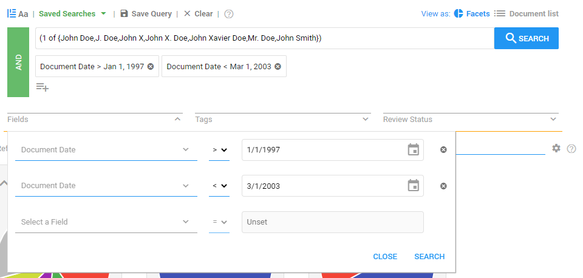

If there are many documents to be searched, it is helpful to use the date range technique offered by ZyLAB ONE. This technique allows the reviewer to search for documents between certain dates. This will ensure that only relevant documents are found, which belong to the time frame determined at the beginning of the process.
For instance, Enron can use this functionality to find documents between 1997 and 2002, the time during which John Doe worked for Enron.
In addition, this functionality can help the user comply with their storage limitation obligations. By searching for documents that are older than a certain date, the documents that are no longer necessary can be found and deleted.
